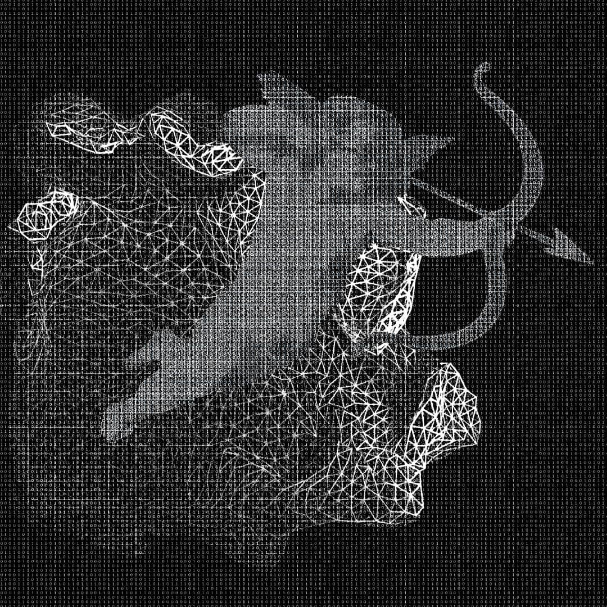
Key art for a poster for a theatre show about online dating. Note that Cupid is made out of 1's and 0's. Made with Photoshop and Blender.
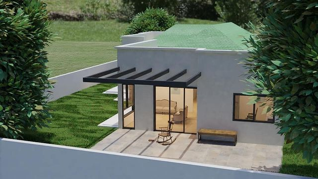
A 3D demo of a house following an architectural script before it was built. Made for an architect to show to her clients. Made in Blender.
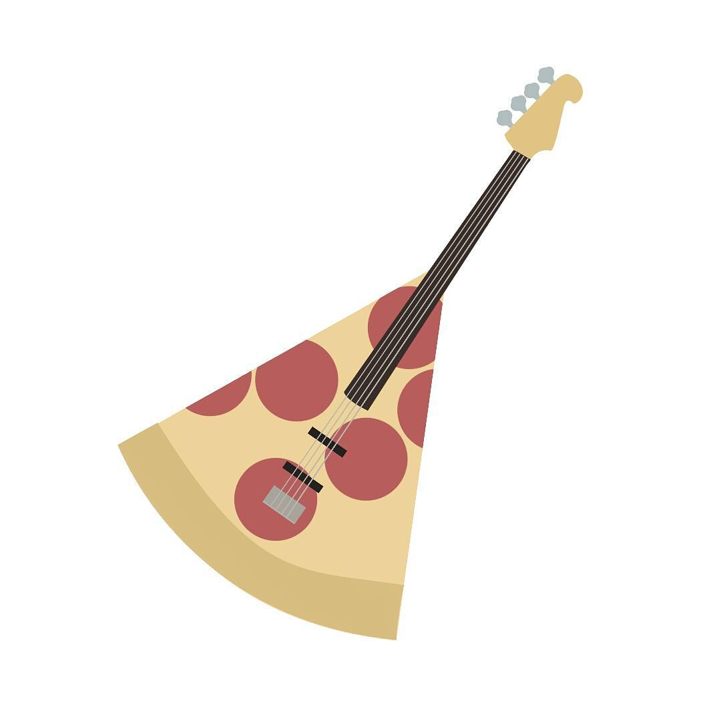
A logo to be printed on stickers for a local rock band — a mix between a pizza slice and a bass guitar. Drawn in Photoshop.
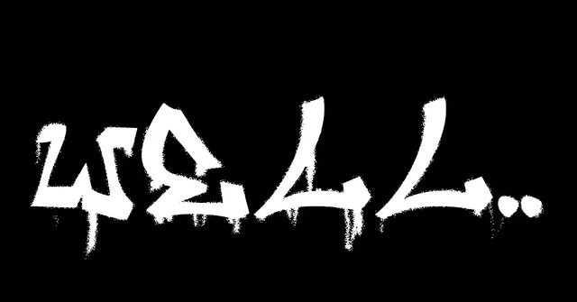
Decal texture of graffiti for my game Idiotic (The Game). Made using a Photoshop script I built to convert inputted text into graffiti.
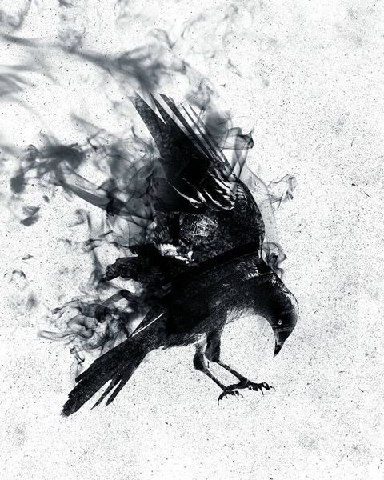
A print made for someone dear to me as a gift. Made in Photoshop.
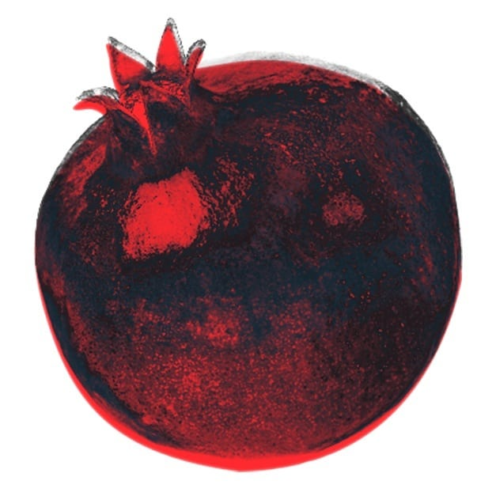
Key art from a poster for a local skaters event during Rosh Ha'Shana I helped organize. Made in Photoshop.
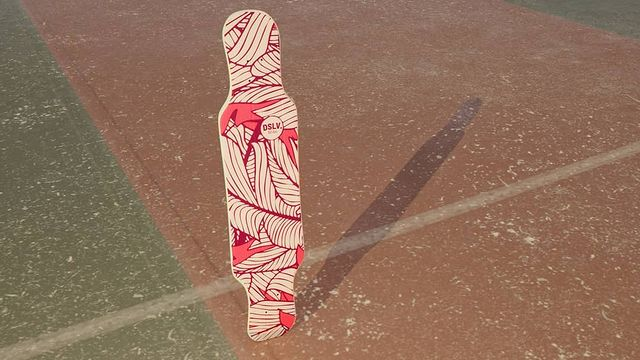
Practice in photorealism in Blender following an ad photo of a longboard I bought from Dasilva. Made with Blender and Photoshop.
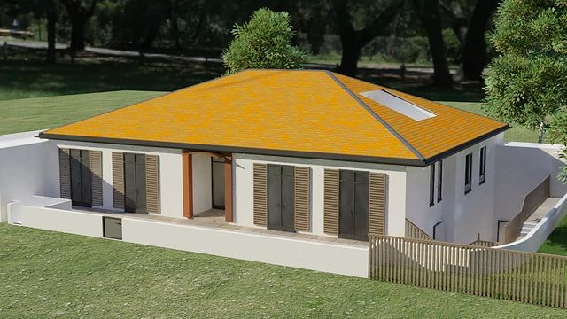
Another 3D demo of a house made in Blender following an architectural script before it was built. Made for an architect to show to her clients.
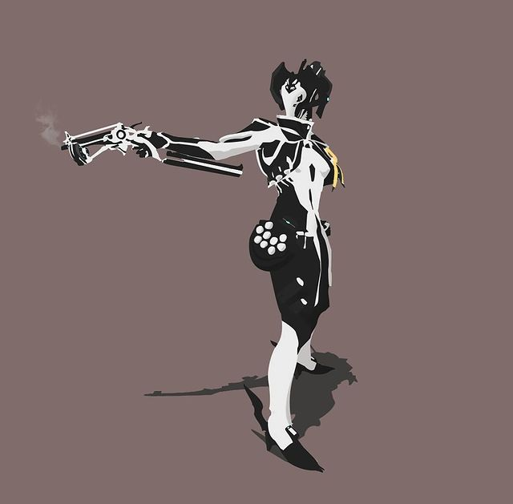
Fanart of my character (Mesa) in the video game Warframe. Drawn in Photoshop.
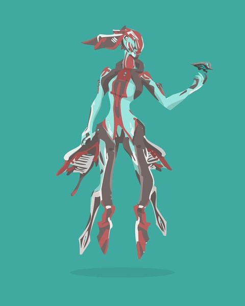
Fanart of the character Titania from the video game Warframe. Drawn in Photoshop.
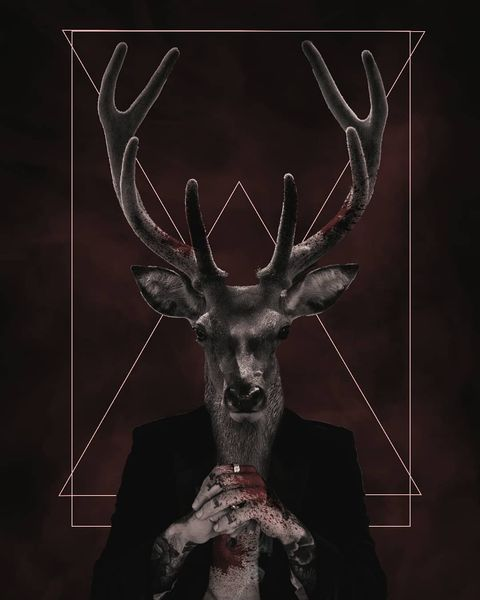
A personal project made to practice storytelling via an image and composition building using abstract lines. Made in Photoshop.
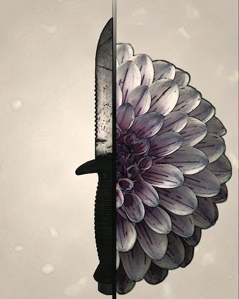
A personal project inspired by Dishonored. Made in Photoshop.
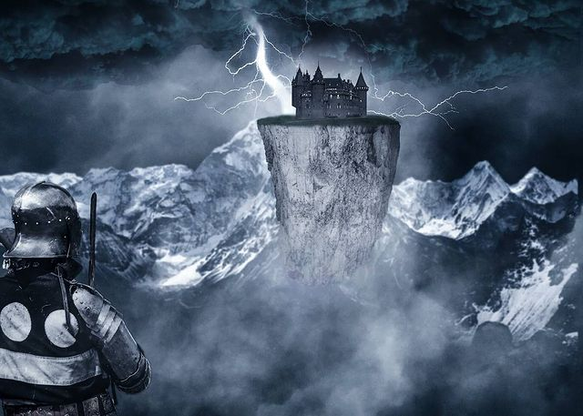
A personal project made to practice storytelling via an image. Made in Photoshop.
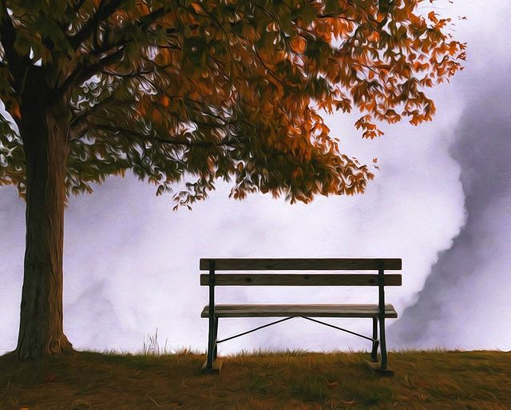
A personal project made to practice surrealism. Made in Photoshop.
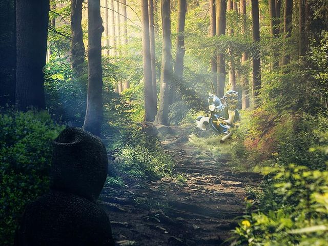
A personal project made to practice composition, lighting and color theory. Made in Photoshop.
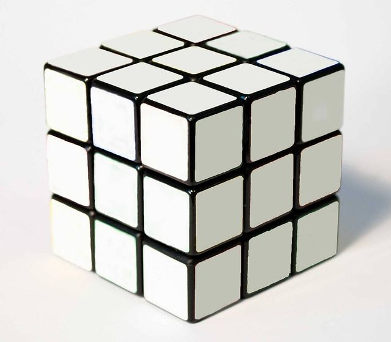
My second project ever back when I started learning Photoshop :)